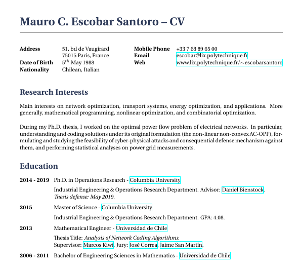
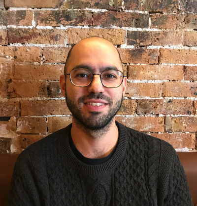
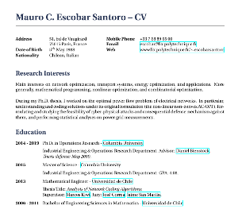

Mauro Escobar



|  |
Mauro Escobar
|

|
|
I am interested in Mathematical Optimization, in particular, Stochastic Programming, Linear Programming, Combinatorial and Discrete Optimization, Convex Optimization, and Semidefinite Programming. I also have a broad interest Discrete Mathematics and Computational Complexity Theory.
I did my PhD thesis on defense mechanisms to detect cyber-physical attacks on Power Grids.
Tengo un amplio interés en la Optimización, en particular, Optimización Estocástica, Programación Lineal, Combinatorial, Optimización Discreta, Optimización Convexa y Programación Semidefinida. También tengo interés en las Matemáticas Discretas y en la Teoría de la Complejidad Computacional.
Durante mi doctorado, trabajé en mecanismos de defensa frente a ataques físicos y cibernéticos a redes eléctricas.
I have been Teaching Assistant for Stochastic Models (B.S. and M.S. courses) at the IEOR department with professors Ward Whitt (in 2014), Mariana Olvera-Cravioto (in 2016), and David Yao (in 2015 & 2016). At LIX, I have been Teaching Coordinator for Decision theory, with applications to energy systems with professors Claudia D'Ambrosio and Leo Liberti (in 2020).
He sido Profesor Asistente del curso Modelos Estocásticos (cursos de pregrado y magister) en el departamento de IEOR con los profesores Ward Whitt (en 2014), Mariana Olvera-Cravioto (en 2016) y David Yao (en 2015 y 2016). En LIX, he sido profesor coordinador del curso Teoría de la decisión, con aplicaciones en sistemas de energía con los profesores Claudia D'Ambrosio y Leo Liberti (en 2020).
CV (en inglés): pdf
Last updated: November 2020Última actualización: Noviembre 2020